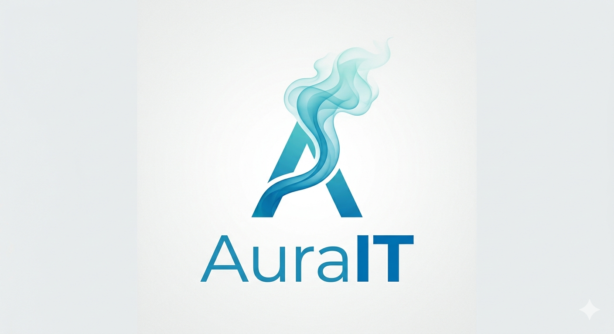
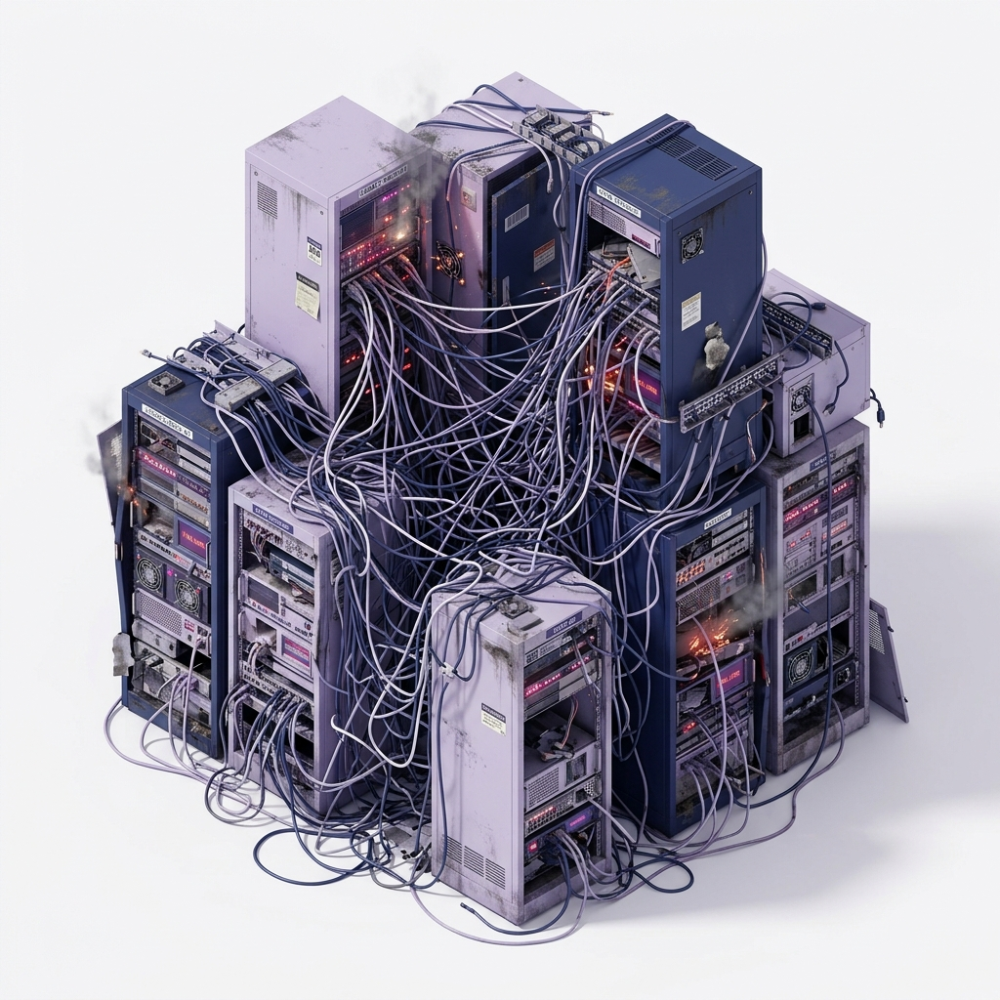

Documento completo de Arquitectura de Software para el nuevo sistema de Industrias Metalúrgicas Acero, aplicando los conceptos para modernizar una empresa con 45 años de trayectoria.

Fundada en 1981, con 45 años en el mercado. Comenzó como un pequeño taller de tornería.
Actualmente opera 4 plantas industriales y cuenta con más de 800 empleados a cargo.
Manufactura Industrial y Metalurgia. Producción enfocada en máxima calidad y estándares exigentes.
Producción de piezas y componentes para las industrias automotriz, petrolera y maquinaria agrícola.
ERP propietario en Progress 4GL + Oracle con 28 años de antigüedad. Los módulos (producción, contabilidad) operan desconectados sin cohesión funcional.
La planificación de producción (MRP) falla, obligando a operar por fuera del sistema en planillas de Excel, perdiendo integridad y automatización.
Imposibilidad total de implementar IoT e Industria 4.0. Alta dependencia del proveedor original y trazabilidad deficiente que amenaza las certificaciones ISO.
